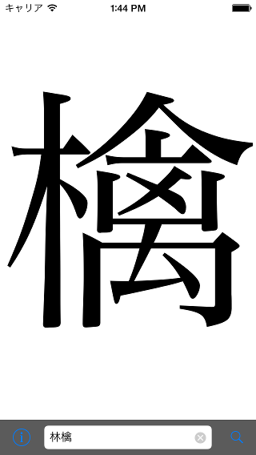
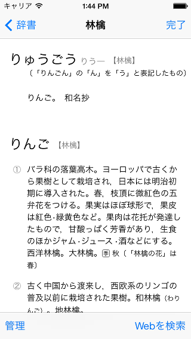

<figure>
  
  
  
</figure>

<ul id="downloadList">
  <li class="badge"><a href="#">配信停止中</a></li>
</ul>

<h2>ヴァージョン履歴</h2>
<dl>
  <dt>2013年11月5日：ver. 1.0.2</dt>
  <dd>設定画面にiAdバナーを追加</dd>

  <dt>2013年9月25日：ver. 1.0.1</dt>
  <dd>iOS 7に最適化</dd>

  <dt>2012年10月16日：ver. 1.0</dt>
  <dd>初期ヴァージョン</dd>
</dl>
